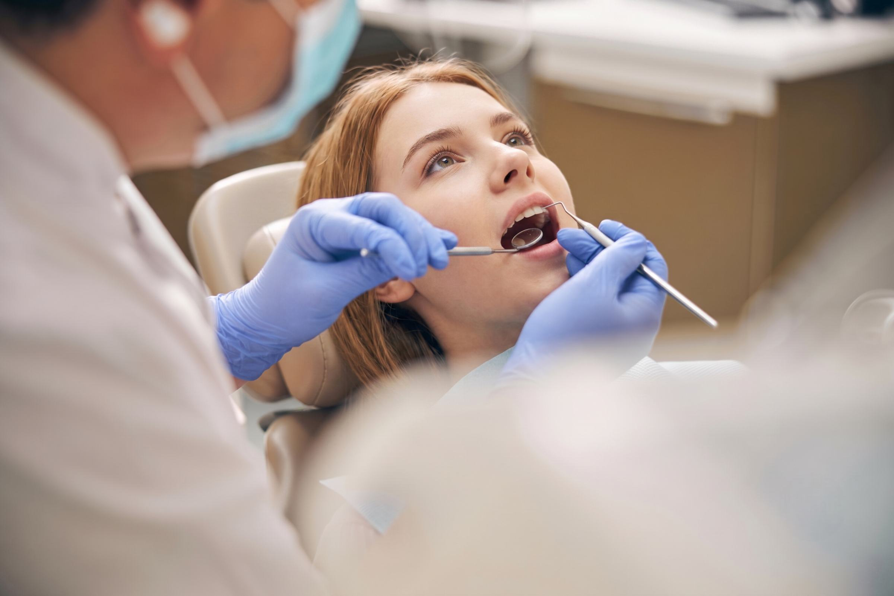
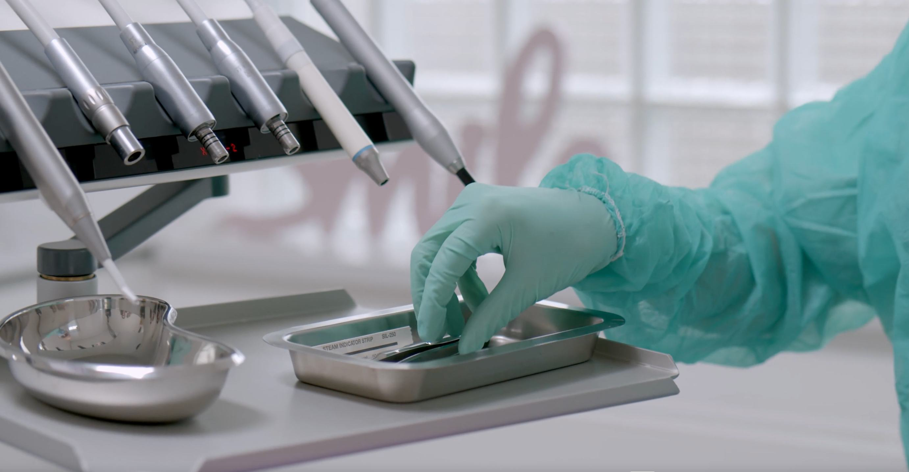
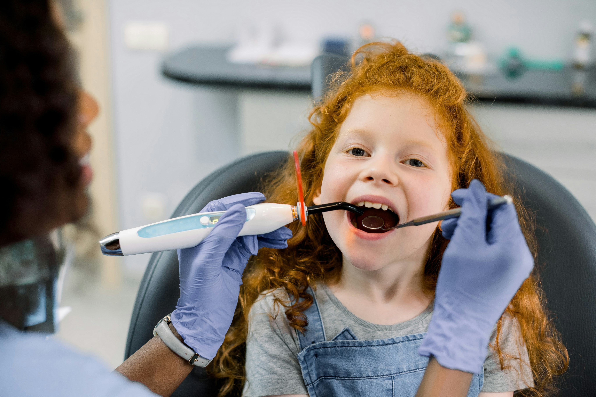
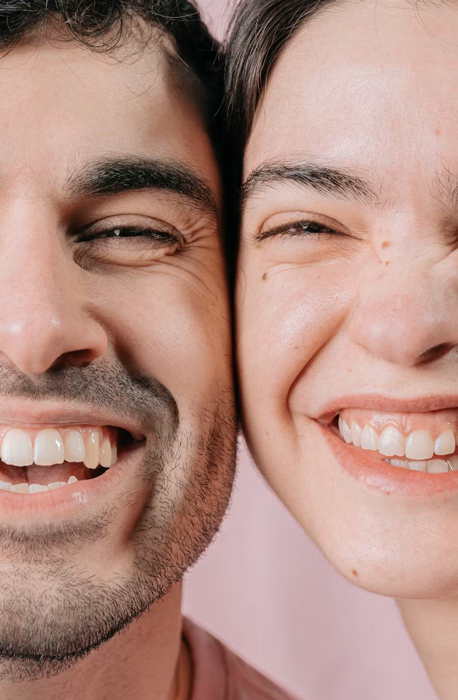
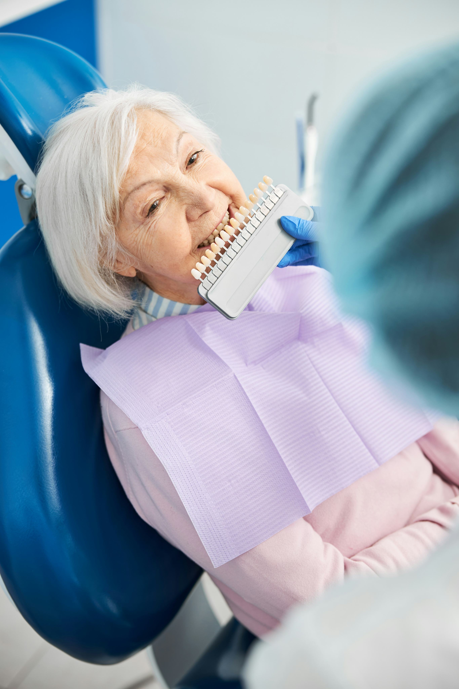
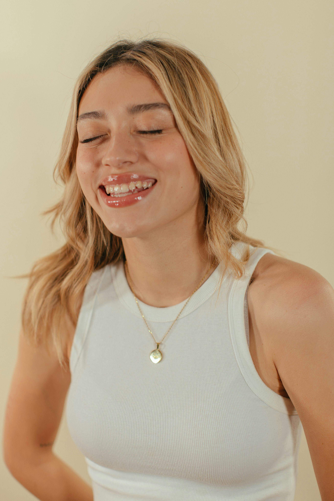

Консультація та діагностика
Точна оцінка стану зубів та ясен для вибору оптимального плану лікування. Професійний огляд, діагностика та консультації спеціалістів.
Дізнатися більше ↗
У «МедГарант» поєднуємо сучасні технології, досвід лікарів
та індивідуальний підхід для якісного й комфортного лікування.

Понад 30 років допомагаємо пацієнтам підтримувати здоров’я зубів і створювати красиві, впевнені усмішки.
Лікарі поєднують професійні знання, сучасні методики лікування та уважне ставлення до кожного пацієнта.
Комплексне лікування: від терапії та профілактики до імплантації, протезування й хірургії.
Підбираємо оптимальний план лікування з урахуванням потреб кожного пацієнта, щоб забезпечити ефективний результат.




Точна оцінка стану зубів та ясен для вибору оптимального плану лікування. Професійний огляд, діагностика та консультації спеціалістів.
Дізнатися більше ↗Дбайливе лікування та профілактика для маленьких пацієнтів. Допомагаємо зберегти здорову усмішку з комфортом та турботою.
Дізнатися більше ↗Лікування зубів та відновлення їх природної функції. Сучасні методи лікування карієсу, пульпіту та інших захворювань.
Дізнатися більше ↗Профілактика захворювань та здоров’я вашої усмішки. Професійне очищення зубів для свіжості, краси та довготривалого результату.
Дізнатися більше ↗Комплексне лікування захворювань ясен та тканин навколо зубів. Повертаємо здоров’я ясен та запобігаємо розвитку проблем.
Дізнатися більше ↗Безпечні хірургічні процедури з турботою про комфорт пацієнта. Видалення зубів, підготовка до імплантації та інші оперативні втручання.
Дізнатися більше ↗